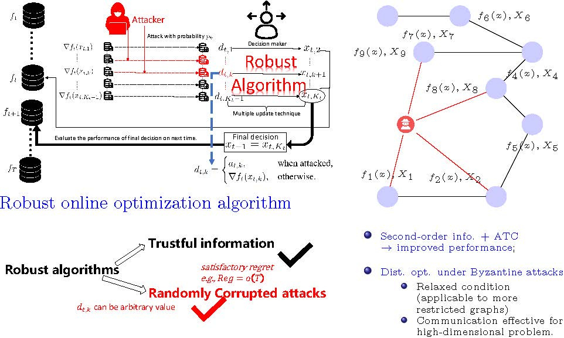

Zhihai Qu
Zhihai Qu, Ph.D.
Engineer, Placement R&D Department, X-Times Design Automation Co., Ltd.
Research Interests:
- Distributed optimization
- Byzantine attacks (adversarial case in networked system)
- Second-order (also first-order) distributed optimization methods
- Federated learning
- Communication complexity
- Adaptive stepsize (related to Adam, AdaGrad, YOGI, Muon, etc.)
- Online optimization
- Adversarial/corrupted feedback attacks in online optimization
- Expert advice
- Current focus: Placement and routing (P&R) in the physical design of EDA - optimization and machine learning for digital chip implementation
- Also interested in: Optimization and machine learning related topics (such as reinforcement learning, large language models), multi-objective optimization, constraint programming - satisfiability
Short Introduction:
When agents become unreliable, adversarial agents may take control of the network. I am interested in developing robust algorithms urgently needed for current research, particularly in distributed scenarios, including both fully distributed and federated learning, as well as online and offline environments. I am also open to impactful research fields, such as reinforcement learning and large language models.Work Experience
Working on placement in the physical design of digital implementation EDA: the optimization algorithms that decide where every cell and macro is placed on the die, and that shape the geometry on which the subsequent routing, clock-tree, and timing-closure steps have to work. Placement is the first and most consequential step of the place-and-route (P&R) flow, because it fixes the architecture of the layout and largely determines the achievable timing, power, and area (PPA).
Optimized industrial supply chains with OR-Tools CP-SAT and built intelligent scheduling systems for port logistics — automating the coordination between arriving ships, berth availability, crane operations, and stockyard management.
Federated learning algorithm development.
Publications
Journal Papers
[7] H. Tian, Q. He, Z. Qu, and X. Li,“Dynamic Regret for Byzantine-Robust Online Federated Learning," IEEE Transactions on Signal Processing, vol. 74, pp. 1357-1367, Mar. 2026, doi: 10.1109/TSP.2026.3673260.
[6] K. He, Z. Qu, X. Li, & J. Xu, “On Linear Convergence of Exponential Sign-based Gradient Descent,” Journal of Control and Decision, vol. 0, no. 0, pp. 1–13, 2025, doi: 10.1080/23307706.2025.2469888.
[5] Z. Qu, X. Li, L. Li, and X. Yi, “Online Optimization under Randomly Corrupted Attacks,” IEEE Transactions on Signal Processing, vol. 72, pp. 2160–2172, Apr. 2024, doi: 10.1109/TSP.2024.3392361.
[4] Z. Qu, X. Li, L. Li, and Y. Hong, “Linearly Convergent Second-Order Distributed Optimization Algorithms,” IEEE Transactions on Automatic Control, vol. 69, no. 8, pp. 5431–5438, 2024, doi:10.1109/TAC.2024.3360287.
[3] Z. Qu and L. Jie, “Distributed Finite-time-consensus-based Heavy-ball Algorithm,” Journal of University of Chinese Academy of Sciences, vol. 39, no. 1, Art. no. 127, 2022, doi: 10.7523/j.ucas.2020.0009.
[2] H. Wei, Z. Qu, X. Wu, H. Wang, and J. Lu, “Decentralized Approximate Newton Methods for Convex Optimization on Networked Systems,” IEEE Transactions on Control of Network Systems, vol. 8, no. 3, pp. 1489–1500, 2021, doi: 10.1109/TCNS.2021.3070663.
[1] X. Wu, Z. Qu, and J. Lu, “A Second-Order Proximal Algorithm for Consensus Optimization,” IEEE Transactions on Automatic Control, vol. 66, no. 4, pp. 1864–1871, Apr. 2021, doi: 10.1109/TAC.2020.2996205.
Conference Papers
[6] Z. Qu, X. Li, M. Meng, X. Yi, and K. You, “A Graph-relaxed Method for Byzantine-resilient Distributed Multidimensional Consensus,” in 2025 19th IEEE International Conference on Control & Automation (ICCA), 2025, pp. 1-6, doi: 10.1109/ICCA65672.2025.11129708. (Best paper award).
[5] K. He, Z. Qu, and X. Li, “On Linear Convergence of Adaptive Sign-based Gradient Descent,” in 2024 36th Chinese Control and Decision Conference (CCDC), 2024, pp. 449–454. doi: 10.1109/CCDC62350.2024.10588228.
[4] Z. Qu, X. Li, L. Li, and Y. Hong, “Distributed Second-order Method with Diffusion Strategy,” in 2023 IEEE International Conference on Systems, Man, and Cybernetics (SMC), 2023, pp. 2022–2027. doi: 10.1109/SMC53992.2023.10394381.
[3] Y. Zhou, J. Lv, Z. Qu, and D. Dai, “How to Support the Decision-Making Process of Community Regeneration in Megacities Based on Evolutionary Game——A Case Study in Shanghai,” in Innovation in Urban and Regional Planning, vol. 242, in Lecture Notes in Civil Engineering, vol. 242. Cham: Springer International Publishing, 2022, pp. 83–93. doi: 10.1007/978-3-030-96985-1_10.
[2] Z. Qu, X. Wu, and J. Lu, “Finite-time-consensus-based Methods for Distributed Optimization,” in 2019 Chinese Control Conference (CCC), 2019, pp. 5764–5769. doi: 10.23919/ChiCC.2019.8865722.
[1] H. Wei, Z. Qu, X. Wu, H. Wang, and J. Lu, “An Approximately-Zero-Gradient-Sum Algorithm for Consensus Optimization,” in 2018 15th International Conference on Control, Automation, Robotics and Vision (ICARCV), Singapore: IEEE, Nov. 2018, pp. 826–830. doi: 10.1109/ICARCV.2018.8581380.
Biography
Zhihai Qu has completed his Ph.D. in Control Science and Engineering at Tongji University, China, under the supervision of Prof. Li Li, with co-supervisors Prof. Xiuxian Li and Prof. Yiguang Hong, in December 2024, during which he was awarded the 2024 National Scholarship for Doctoral Candidates. He received his Master's degree in Communication and Information Systems from the University of Chinese Academy of Sciences, China, under the supervision of Prof. Jie Lu in 2020. Following his Master's studies, he joined Hithink Royal Flush Info. Network Co. as an algorithm developer, focusing on federated learning algorithm development, before leaving in 2021. He obtained his B.S. degree in Electronic Information Science and Technology from Hefei University of Technology, Anhui, China, in 2017. His research interests include, but are not limited to, developing algorithms for distributed optimization, federated learning, and online optimization problems, with a particular focus on the security issues therein.
Zhihai is highly self-motivated and capable of working both independently and collaboratively with his colleagues. He enjoys engaging in discussions with people from various fields and excels at asking questions, often leading to new topics for future research. Zhihai has a strong reputation among colleagues from diverse perspectives. However, he is not without flaws; sometimes, he spends too much time on a single area in his quest to satisfy his curiosity. When this happens, a stop button should be pressed.
After working in the company, where he was also an algorithm developer, he believes that he is still passionate about doing more interesting and realistic research. He believes that solely publishing more work may not make the world better, but good work can. Academic research and practical implementation are both important for the world.
Influenced primarily by family considerations, and secondly by a desire to keep research as a passion rather than a profession, he made the decision to leave academia and join industry. He found that pursuing research as a career often brought more pressure than inspiration, and hopes that this new path will allow him to explore meaningful and practical ways to make a positive impact on the world. Whether he returns to academia one day remains uncertain—but his enthusiasm for impactful research remains unchanged.
Previous Role: Software Engineer at BaoSight Software, where he built intelligent scheduling systems for port logistics with OR-Tools CP-SAT—automating the coordination between arriving ships, berth availability, crane operations, and stockyard management, and optimizing industrial supply chains in the process.
Current Role: In September 2026 he left BaoSight Software and joined X-Times Design Automation Co., Ltd. (XTIMES-DA), a company devoted to digital-implementation EDA, where he is currently an engineer in the Placement R&D Department.
The Focus: Placement and routing (P&R) in the physical design of EDA—deciding where each cell of a digital chip should be placed and how the wires between them should be routed, so that timing, congestion, and design-rule constraints are satisfied at the same time.
A Short Introduction to EDA: Electronic Design Automation (EDA) is the software stack that takes a chip from a description of its behavior to a manufacturable layout. Starting from a register-transfer-level (RTL) design, it plans the floorplan, places millions of standard cells and macros, builds the clock tree, routes billions of wires, and checks timing, power, and design rules—a job that is far beyond manual effort and must be repeated many times before a single chip can be taped out. Digital implementation is the part of the flow that turns logic into geometry, and placement is its first and most consequential step, since it fixes the skeleton of the layout and bounds what the later steps (clock-tree synthesis, routing, timing closure) can still repair. The underlying problems are among the largest combinatorial optimization problems in industry, and the algorithms that solve them combine mathematical optimization, heuristic search, and, increasingly, machine learning.
The Appeal: It is one of the hardest combinatorial optimization problems in the semiconductor industry, and it lets him keep doing what he has always enjoyed—turning optimization theory into algorithms that people actually use under real production pressures of runtime and quality of results. In his view, an optimization algorithm should survive a real chip, which is the ultimate test: the silicon always gives the honest answer.
In his free time, he explores the practical side of LLM development, experimenting with various frameworks and implementation techniques to uncover new possibilities. He is eager to navigate the emerging 'Agent Age', where he focuses on the potential of multi-agent architectures and how they can be leveraged to solve complex, collaborative tasks.